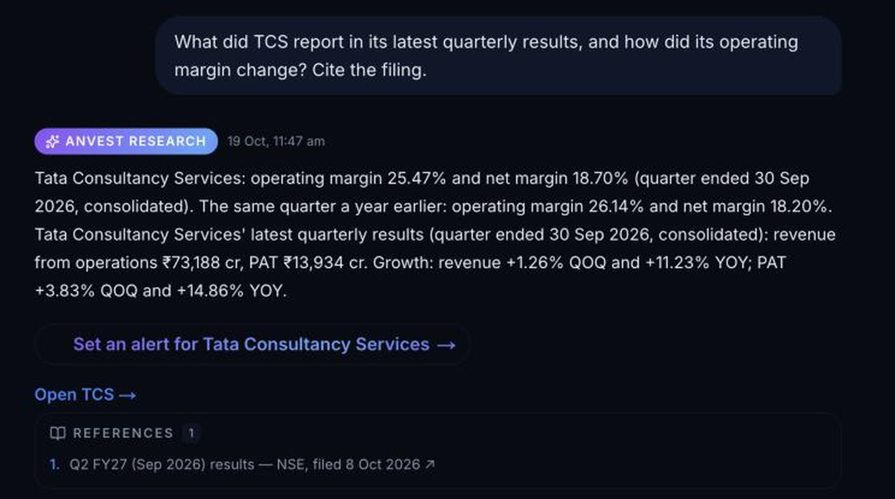

The warehouse records ~49,000 announcements/month in Q2 FY27. %%SEBI_FIRMS%% SEBI-registered firms and serious investors still read them by hand, often as scans, and jump between screeners, backtesters and spreadsheets, while chatbots can invent figures. They lack a trustworthy way to turn information into a decision.
One AI across research, testing and planning. Answers show the filings they draw on; if the data isn't there, Anvest says so.
15,899 cash-flow rows recovered from malformed XBRL; 3,608 conflicting source figures flagged across 1,022 companies; OCR for scanned filings (10 of 10 tier-1 bank results in a Q1 FY27 sample). The chatbot is replaceable; the verified corpus is not.
Trendlyne and Tijori offer AI screeners; Screener.in meters AI credits; Streak runs technical strategies via Zerodha. Anvest carries one question from cited evidence to a screen, a costed backtest and a paper trade, with planning in the same account.
Built and live in 12 months with no outside capital or marketing: 31 registered accounts, 418 queries and 238 saved backtests (20 Oct, including founder/testing); nightly ingestion of prices, filings, NAVs and news.
Harsh Bhardwaj, Founder (full-time from round close): IIT Guwahati; Senior Engineering Lead on production agentic LLM systems; seven years in backend systems (New Relic, Shiprocket, Weave, JLR). Hires: growth lead, data engineer, full-stack/quant engineer, second seller.
CCD/CCPS, identical terms; first close $400K, room to $700K. Team $%%U_TEAM%%K · compliance and infra $%%U_COMP%%K · growth and founder $%%U_GROW%%K · reserve $%%U_RES%%K.